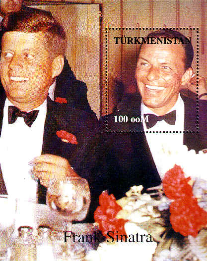
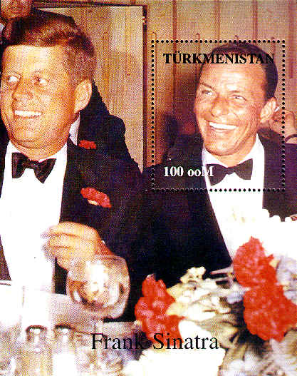
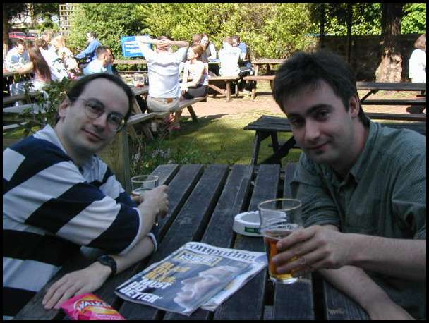
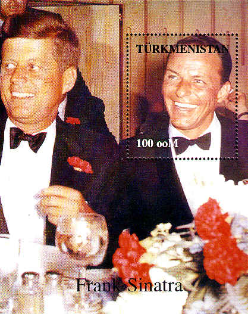

This document is intended to provide an illustrated walkthrough of the RDFWeb distributed photo-metadata experiment. Right now it is pretty bare, but hopefully will give you an idea of what we're attempting.
Nearby: co-depiction online demo
RDFWeb is intended to be both fun and technically challenging. We are trying to make at least some of the writing here accessible for a general audience, although much of it will be for the rather small community familiar with the subtleties of various Semantic Web technologies. So we're trying to build a linked information system, RDFWeb, as a way of connecting these two goals. In particular, we're trying to come up with practical and interesting applications for the Semantic Web, and explore ways of making them real. One of our favourite examples is photo metadata. This document tries to explain why...
The (soon to be "Semantic") Web, if it is to reach its full potential, needs to become a lot more automatic. We hope that it will be able to do things (offer us services) based on combining data and services scattered around the Web. It might, for example, be able to find the phone numbers or AOL screen names of all your friends and professional collaborators. Or show you the photos, names and recent publications and shared bookmarks for everyone attending the next meeting in your calendar.
There are so many things the Web might usefully do in the future, that it is sometimes hard to see how we might get there from here. W3C's RDF has been around since 1997, yet while it has been adopted in a number of applications (eg. Mozilla, Open Directory, Adobe, RSS 1.0), people often ask why there is as yet no killer app for RDF. While we're not sure that 'killer app' is the right way to think about the problem, it is true that there is relatively little RDF data 'out there in the public Web', in the way that HTML is 'out there'.
The original idea behind RDFWeb was to experiment with making some cheap, simple RDF document formats that were designed for deployment in the public Web. We began by asking 'What would it be like if machines could read my homepage?', and by prototyping a simple vocabulary called FOAF ('Friend of a Friend').
@@writeme Blah blah rdfweb co-depiction blah foaf blah knows blah what happened... blah six degrees blah fun blah testbed blah realHere's an example path through photos from me to Frank Sinatra. Some of these photos are described in RDFWeb already, others I just found using Google image search.


..etc
$Id: index.html,v 1.2 2002-02-09 00:06:32 danbri Exp $
{kind=link}
{kind=link}
{kind=link}
{kind=link}
{kind=link}
{kind=link}